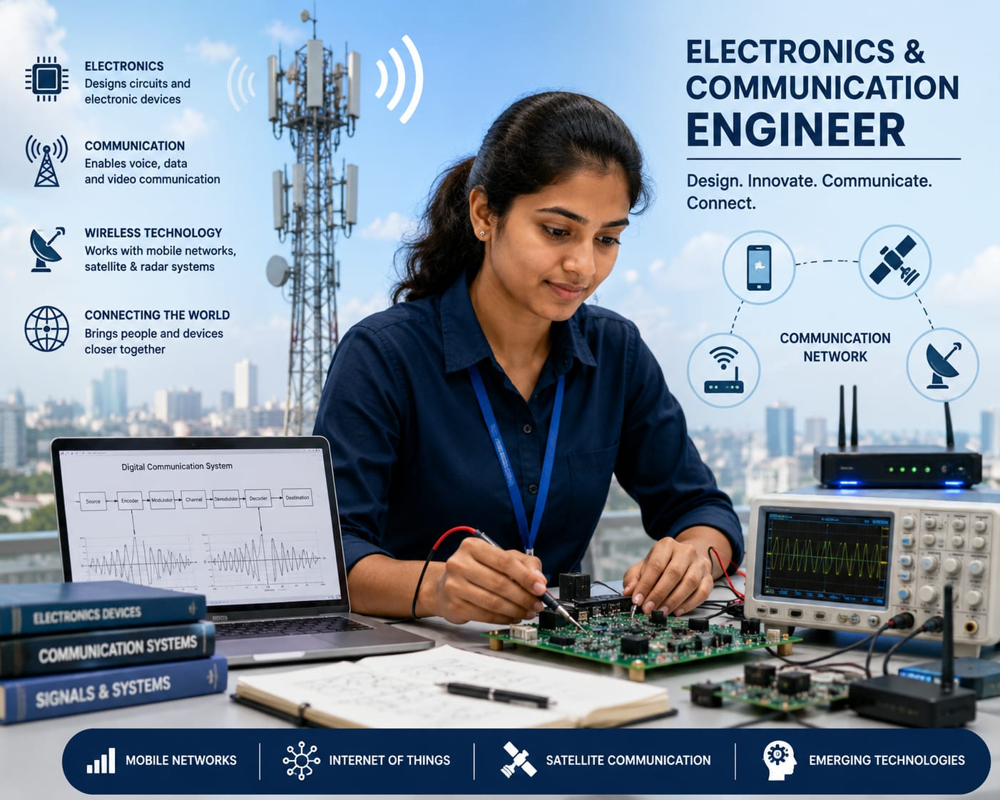

- Have you ever wondered how your phone can send messages or make video calls?
- When you make a video call, the information from your phone first reaches a nearby communication tower or Wi-Fi router.
- It is then sent through communication networks to the other person's phone.
- Mobile phones, Wi-Fi routers, communication towers, and satellites help make this possible.
- The person who designs and maintains these systems are called an Electronics and Communication Engineer.
- 👉 In simple words: Electronics and Communication Engineers design electronic devices and communication systems that help people stay connected.
Electronics and Communication Engineer
🧑🎨 What Do They Do?

🎓 How to Become an Electronics and Communication Engineer
These diploma courses help students learn electronics, communication systems, circuits, networking, and embedded devices.
Diploma in Electronics and Communication Engineering
Duration: 3 Years
Eligibility: 10th Pass with Science and Mathematics
Exam: State Polytechnic Entrance Exams (e.g., JEECUP, POLYCET)
Note: Students can work as electronics technicians or continue higher studies in Electronics and Communication Engineering.
B.Tech / B.E. in Electronics and Communication Engineering (ECE)
Duration: 4 Years
Eligibility: 10+2 with Physics, Chemistry, and Mathematics (PCM)
Exam: JEE Main / JEE Advanced / State Entrance Exams (MHT CET, WBJEE) / University Entrance Exam (VITEEE)
📝 Exam Details
(Click on an exam name to see full details)
JEE Main JEE Advanced State Engineering Entrance Exams University Entrance ExamsB.Tech Lateral Entry in Electronics and Communication Engineering
Duration: 3 Years (Direct admission into 2nd year)
Eligibility: 3-Year Diploma in ECE or allied branches
Exam: State Lateral Entry Entrance Exams (e.g., JELET, TS ECET)
Note:
(Age limits, marks, and admission process may vary depending on the college or state. These courses are available in many colleges and universities across India. You can choose colleges based on your location, budget, and entrance exams.)
🏛️ Top Colleges for Electronics and Communication Engineering
(Tap on a college to view the details)
After 10th Pass (Diploma Programs)
Government Polytechnic, Mumbai PSG Polytechnic College, Coimbatore Government Polytechnic College, Kalamassery Thakur Polytechnic, MumbaiAfter 12th Pass (Bachelor's Degrees)
Indian Institute of Technology (IIT) Roorkee, Roorkee Indian Institute of Technology (IIT) Guwahati, Guwahati National Institute of Technology (NIT) Trichy, Tiruchirappalli National Institute of Technology (NIT) Surathkal, Mangaluru BITS Pilani, Pilani CampusAfter Diploma (Lateral Entry)
Anna University (MIT Campus), Chennai COEP Technological University, Pune Jadavpur University, Kolkata Delhi Technological University (DTU), New DelhiAfter Graduation (Master's Degrees & Deep R&D)
Indian Institute of Science (IISc), Bangalore Indian Institute of Technology (IIT) Bombay, Mumbai Indian Institute of Technology (IIT) Delhi, New Delhi Indian Institute of Technology (IIT) Madras, Chennai Indian Institute of Technology (IIT) Kharagpur, KharagpurSTEP 1
Imagine you are working as an Electronics and Communication Engineer.
STEP 2
Millions of people use mobile phones to make calls, send messages, and access the internet.
STEP 3
Your job is to help keep these communication systems working properly.
STEP 4
You check the equipment that helps mobile phones connect to the network.
STEP 5
You find and fix problems in communication systems.
STEP 6
You test new technologies that improve communication.
STEP 7
You help people make calls, send messages, and use the internet without problems.
STEP 8
If you enjoy electronics, communication technology, and solving problems, this career may be right for you.
Where do Electronics and Communication Engineers work? (Job Roles + Growth)
These are some roles you can explore in Electronics and Communication Engineering.
You usually start with beginner roles and grow with experience.
🟢 Beginner Roles
🔧
Junior Electronics Technician
(After Diploma)
Repairs electronic circuits and devices.
📋
Graduate Engineer Trainee (GET)
(After B.Tech)
Assists engineers in testing electronic systems.
🔵 Mid-Level Roles
📱
Embedded Systems Engineer
(After B.Tech + Experience)
Develops electronics for smart devices.
💻
VLSI Design Engineer
(After B.Tech Specialization + Experience)
Designs microchips used in electronic devices.
🟣 Advanced Roles
📡
Telecom Network Manager
(After M.Tech / Advanced Specialization)
Manages communication networks and towers.
🏢
Chief Hardware Architect
(After Executive Program + Experience)
Leads the development of electronic products.
📱
Mobile Network Companies
Build and manage mobile communication networks.
📡
Telecommunication Companies
Develop communication systems and network services.
💻
Electronics Manufacturing Companies
Design and manufacture electronic devices.
🛰️
Satellite & Space Industries
Develop satellite communication technologies.
🚗
Automotive Electronics Industries
Create electronics used in modern vehicles.
🌍
Global Technology Companies
Work on advanced communication technologies worldwide.
(Click Yes or No for each question)
1. Have you ever used the internet on your mobile phone?
2. Have you ever wondered how your phone connects to the internet?
3. Are you interested in learning how mobile phones and the internet work?
4. Are you interested in learning how the internet connects millions of devices?
5. Imagine you are working for a mobile network company. Your job is to help people make phone calls, send messages, and use the internet without interruptions. Does this sound exciting to you?